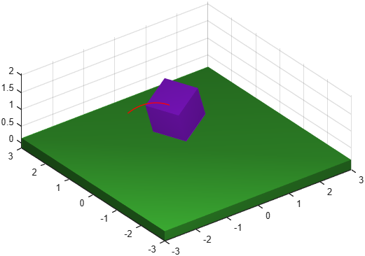

Motion trace
Class phx.Trace | Superclass: phx.base.Object
phx.Trace draws the trail of a moving body into the scene as a
fading curve of recent positions. The traced point is given in the local space of the body, so any
point of the body (not just its origin) can be followed. The color of the trace, the number of
curve points and overlay drawing are configurable.
trace = phx.Trace(body) creates a tracer attached to the point of
origin of the given body. Use Point to trace a different point of
the body.
| Argument | Type | Description |
|---|---|---|
| body | phx.Body (scalar) | The body whose motion is traced. |
| Property | Type / Default | Description |
|---|---|---|
| Point | [0 0 0] | Point in the local frame of the body to be traced. |
| TracePoints | 100 | Number of points of the tracing curve. |
| Overlay | false | Draw the trace as an overlay (always on top). |
clf; view(3); axis equal; grid on; camlight headlight; b = phx.Body("Position", [-2 0 1], "LinearVelocity", [3 0 3.5], ... "AngularVelocity", [8 3 0], "Shape", {"Box", "Size", [1 1 1]}); phx.Body("Type", "static", "Shape", {"Box", "Size", [6 6 0.3]}); phx.Trace(b, "Point", [0.5 0.5 0.5], "TracePoints", 400, "Color", [1 0 0]); sim = phx.Simulation; sim.step(2, 400, 2); delete(sim);
